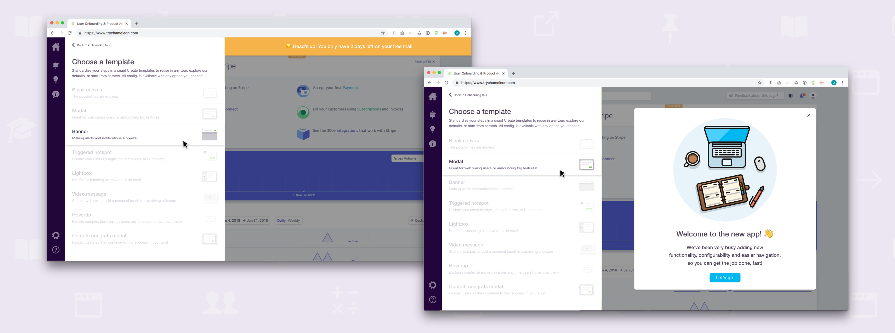
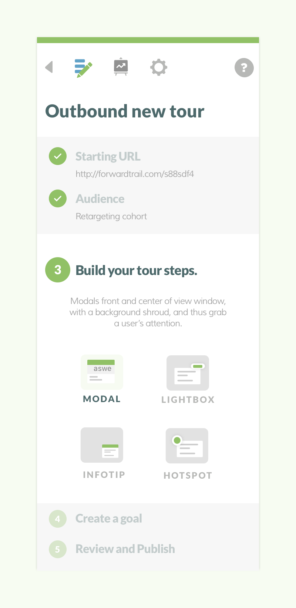
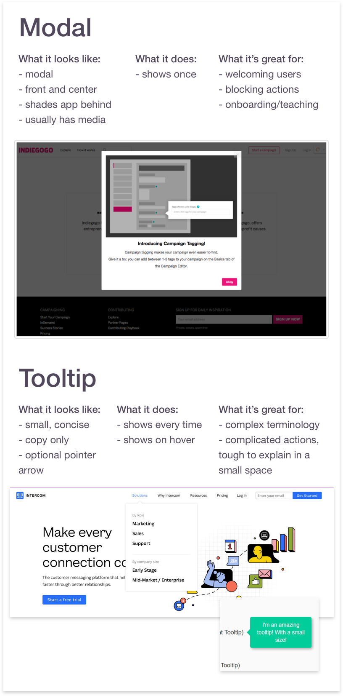
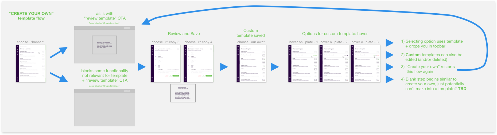
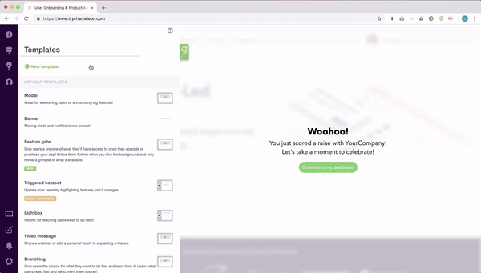
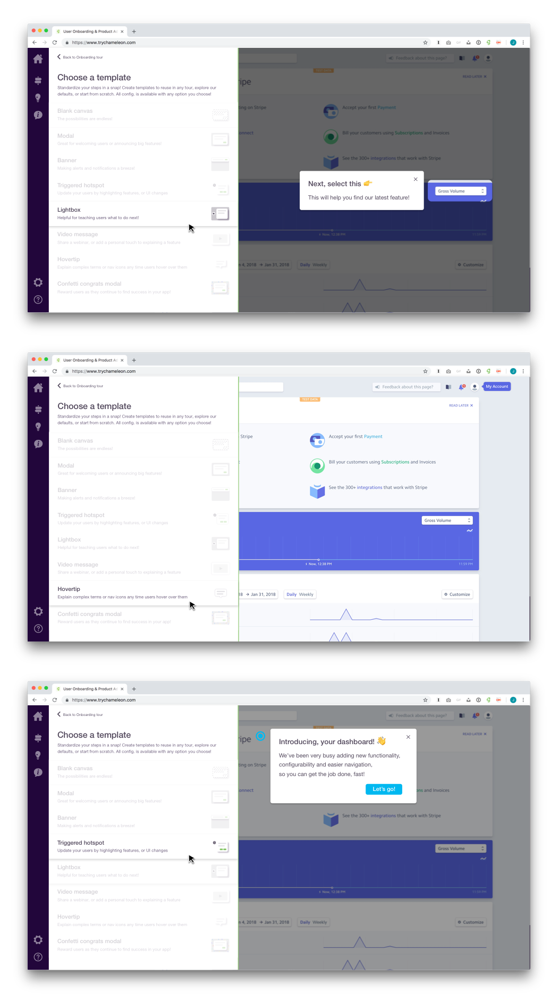
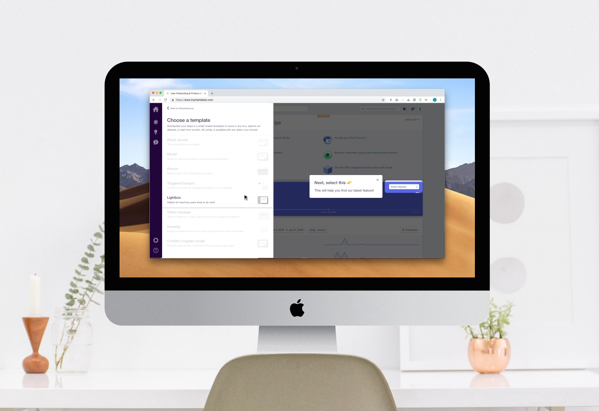

Chameleon templates
It was prominently front and center on top of your app and was meant to halt a user, so that they’d pay more attention to the information in the modal first. Because of this, we could recommend what step types could be used for and it was super simple to learn.


The problem with step types
Locking you into a path
One thing problematic with step types was that they locked you into a specific path. Once a user committed to a step type, they were forced to keep the position and it’s other criteria. They had to delete it and start over if they wanted to change how the tour was being presented. This meant it was difficult to change your mind as you were building tours.
Step types also didn’t allow for much configurability. If your design guidelines were strict or the specifics of a step style didn’t work for your app, there weren’t many options to adjust it.
Over-correcting the problem
The problems with step types actually caused us to over-correct. We got rid of them to allow users to more flexibly configure their steps, however this caused a new problem. Users now lacked the ease of use that came with our initial simplicity. To solve for this, we created step templates.
More choice, more confusion
With the removal of step types, users were able to configure more granularly and had more options to style their steps to appear native in their app. However, they lost the ability to associate particular steps or styles with use cases. They also lost speed. With endless options, there were far more decisions to make. These decisions took time, but they also created a lack of confidence in the product. The more choices a user had to make, the more they were uncertain that each one prior was correct in creating the product tour they intended.
Too many decisions to make
Simultaneously, even if the user didn’t lose confidence, the fact that more choices were necessary meant that there was a greater likelihood some decisions would go unmade, or they’d be made and wouldn’t align with what the user expected to create.
Problems created by removing step types
- More choices meant more confusion
- More choices also meant more user effort
- Loss of speed and simplicity
- Loss of association to use cases
Arriving at templates
Looking back to move forward
After chatting with customers as well as learning that over time more users began to mention the product felt “hard to use,” we had to come up with a way to simplify it again. The product itself was growing significantly more complex because we were adding more functionality, but we couldn’t put those complexities onto the user and expect them to succeed.
This is where we looked back to move forward. The initial concept of step types were great and was also when users more consistently told us how easy our product was to use. We needed to consolidate the benefit of simplicity and less decision making for the user where possible. We could then offer the option to find more variation if the simpler method wasn’t meeting their needs.
Creating step templates became that compromise. I spoke with several customers about what tours they were currently building as well as what they wanted to use Chameleon for in the future. This helped me prioritize and define use cases for our templates. It also helped confirm which problems our customers were frequently looking to solve for.
Increasing adoption of more use cases
Additionally, I used templates as an opportunity to make customers aware of what other use cases were useful and possible with Chameleon. This was incredibly beneficial because it allowed us to guide users to more value within our product from a flow they were already in. It also excited marketing and sales because they were able to help influence users in product!


Final design
Solutions that affected the final design
- Providing more context to the list of templates with descriptions
- Labeling templates (to categorize, draw attention to what’s new, and reveal what's interactive)
- Previewing each template from this screen (allowing someone to see how it could be relevant before committing to a style)
- Distinguishing separate flows for the creation of templates and application in a tour
UI solutions
To connect our templates to use cases, we typically needed a greater explanation than the contents of the template itself. We added descriptions in our templates list to provide that context and allow customers to relay even more specific information.
With long lists it can be difficult to know what’s most relevant to you. As we built out more default templates and expected users to add their own as well, we needed a way to help categorize them. We first implemented labels to solve for that, but we were also able to use them as a marketing strategy. We began to label which templates were “New” and announced them as we developed them.
Previewing templates
Previewing a template was perhaps the most influential piece of this design. Up until this point we didn’t provide the option to view steps out of the context of their tour. Being able to view a template before committing to it helped users feel confident and excited about their choice. Additionally, it gave them more context to other use cases we shared through our defaults and encouraged more tour building.


Navigation solutions
We created default templates for our customers to use and spark ideas, but they were also able to make their own. We initially tried to allow for these concepts to intertwine. For example, when trying to build a tour and apply a template to one of their steps, we assumed users may want the option to adjust or create a new template as they were viewing the available template list. However, this choice proved confusing. Users felt lost and couldn’t quickly determine if they were editing a step or a template, nor where the level up would take them back to. From talking to customers and sharing these early designs, we found that users thought about these two things at very different points in their journey.
Additional learnings
Since creating templates, we’ve been able to review which ones are used most often and see how they’re applied. Not only has that given us insight on what styles our users prefer, so we can design more defaults similarly, but it also teaches us what use cases customers tend to apply to their apps. We can also cross those use cases with what users tend to create first to determine a better understanding of their needs when they seek out Chameleon. This data is an ongoing learning, but I intend to use it to continue to support pain points and needs.
